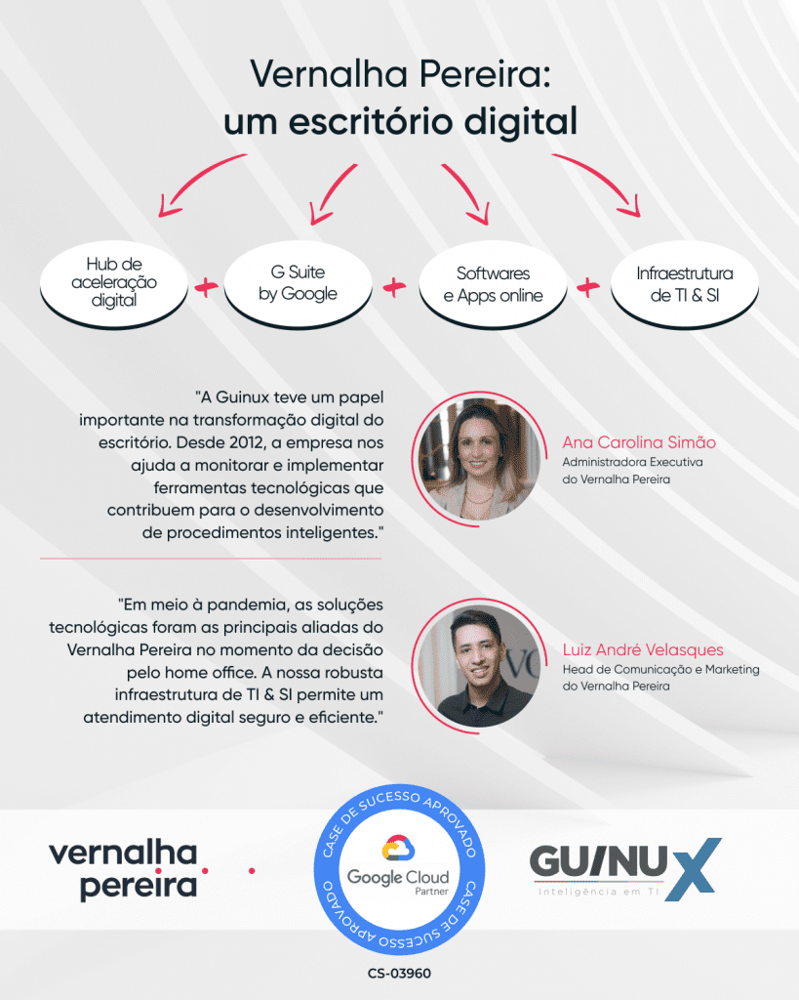

Com mais de 20 anos de atendimento personalizado em todas as regiões do Brasil, atualmente o Vernalha Pereira é reconhecido como um dos escritórios mais admirados do país pelas grandes empresas (Chambers and Partners, Leaders League e Análise Advocacia 500). Com escritórios em São Paulo (SP), Br
asília (DF) e Curitiba (PR), o Vernalha Pereira conta com uma equipe formada por mais de 150 profissionais.
As soluções tecnológicas foram as principais aliadas do Vernalha Pereira no momento da decisão pelo home office. A robusta estrutura tecnológica do escritório, construída e gerida pela Guinux permite um atendimento digital rápido, seguro e eficiente a todos os cli
entes e parceiros institucionais.
Google Workspace
{kind=link}
{kind=link}
{kind=link}
Os profissionais contam com o Google Cloud Workspace para trabalhar de modo integrado usando computador, smartphone ou tablet. Os programas de gestão, elaboração e revisão simultânea de documentos proporcionaram maior agilidade e qualidade na produção das defesas. Com o Drives Compartilhados foi possível armazenar todos arquivos em um só local, permitindo uma busca inteligente, fácil acesso e segurança.
Com o Google Cloud Workspace migramos todos os dados para nuvem, garantindo uma segurança adicional e uma maior flexibilidade no trabalho remoto, além de um pacote completo de aplicativos na nuvem para trabalhar de modo integrado.
Inovação Tecnológica para Advocacia
Entendemos que é preciso mudar a forma com que a TI se relaciona com os escritórios de advocacia, a Guinux vem se tornando referência no meio jurídico hoje contamos com 15 escritórios de advocacia em nosso portfólio.
Case de Sucesso CS-03960 Aprovado pelo Google Cloud – Confira
https://cloud.withgoogle.com/partners/detail/?id=guinux

Relacionados:
Como o Vernalha Pereira Advogados está usando a tecnologia para garantir o atendimento